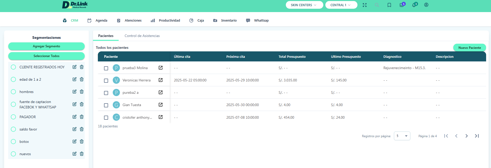

<!--<div class="bg-gradient-to-b from-[#f0fdfa] to-[#00bfae] flex items-center justify-center">-->

<!--<div class="bg-gradient-to-b from-[#f0fdfa] to-[#00bfae] flex items-center justify-center">-->
<div class="flex items-center justify-center">
    <div class="w-full max-w-8xl lg:p-52 lg:-mt-40 sm:mt-10 md:px-20 sm:px-12 video-wrapper lg:-mb-40">
        <video
            src="../../../../../assets/video/DR. LINKY FINAL (VIDEO).mp4"
            autoplay
            muted
            controls
            class="video-fade"
        ></video>
    </div>
</div>

<!--
<div class="flex items-center justify-center">
    <div class="w-full max-w-7xl lg:px-32 md:px-20 sm:px-26">
        
    </div>
</div>-->
<style>
    /* Definir la animación zoom para la imagen */
    @keyframes zoomImageEffect {
        0% {
            opacity: 0;
            transform: scale(0.5);
        }
        50% {
            opacity: 1;
            transform: scale(1.2);
        }
        100% {
            opacity: 1;
            transform: scale(1);
        }
    }

    /* Clase para aplicar la animación en la imagen al cargar */
    .animate-zoomImageOnLoad {
        animation: zoomImageEffect 1s ease-out forwards;
    }

    .video-wrapper {
        display: inline-block;
    }

    .video-fade {
        width: 100%;
        border-radius: 20px;

        -webkit-mask-image: linear-gradient(to top, transparent 0%, black 10%),
            linear-gradient(to bottom, transparent 0%, black 10%),
            linear-gradient(to left, transparent 0%, black 10%),
            linear-gradient(to right, transparent 0%, black 10%);
        mask-image: linear-gradient(to top, transparent 0%, black 10%),
            linear-gradient(to bottom, transparent 0%, black 10%),
            linear-gradient(to left, transparent 0%, black 10%),
            linear-gradient(to right, transparent 0%, black 10%);

        mask-composite: intersect;
        -webkit-mask-composite: destination-in;

        object-fit: cover;
        display: block;
    }
</style>
